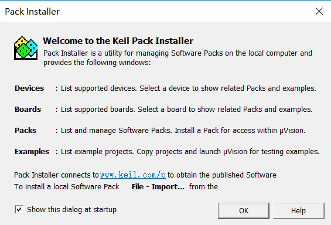
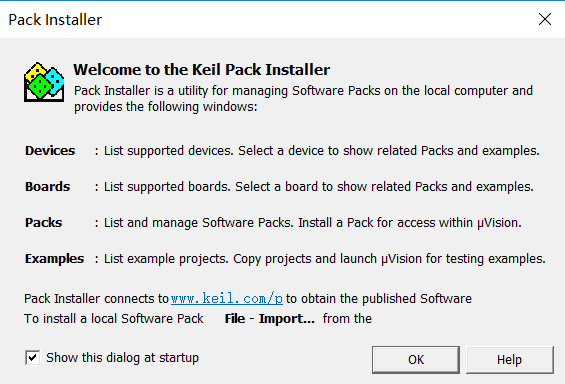
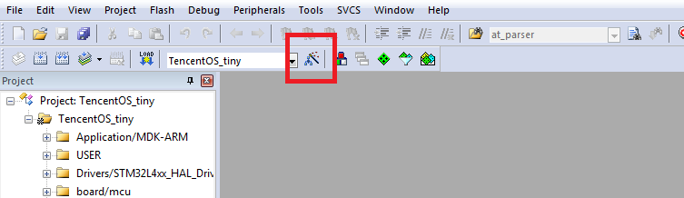
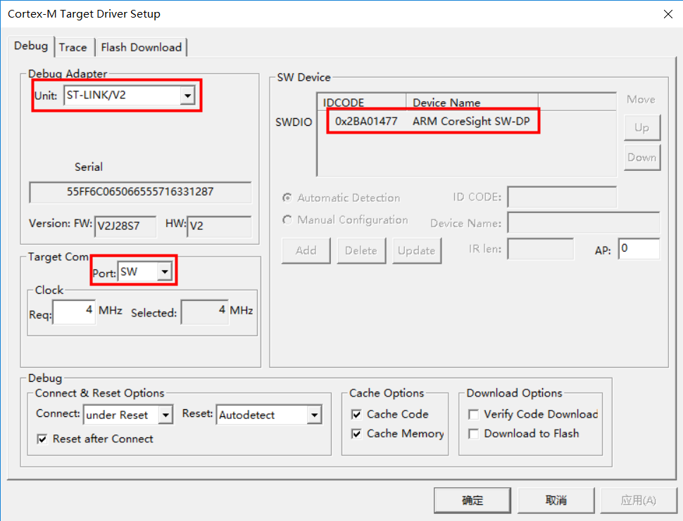
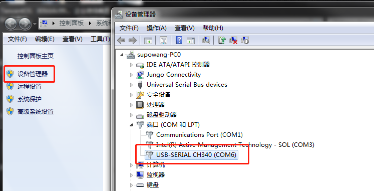
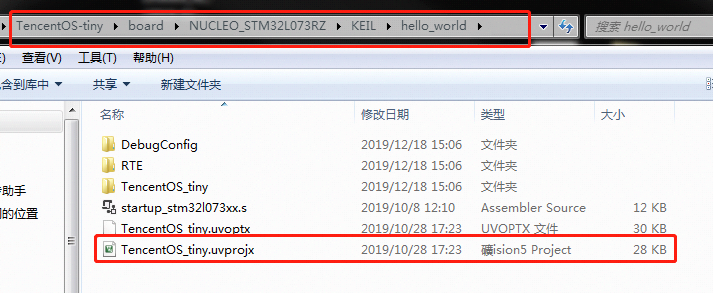
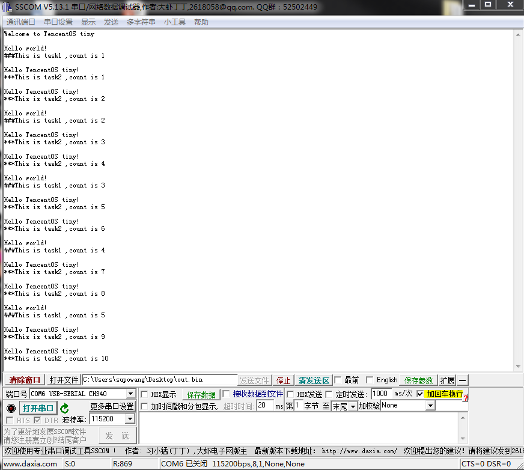

TencentOS tiny定制开发板EVB_MX+快速入门指南
| Revision | Date | Description |
|---|---|---|
| 1.0 | 2019-9-15 | 文档初版 |
| 2.0 | 2020-2-12 | 文档V2.0 |
1. 定制开发板EVB_MX+硬件简介
1.1 开发板简介
EVB_MX+是腾讯物联网操作系统TencentOS tiny 团队联合南京厚德物联网有限公司设计的一款物联网评估板，用于TencentOS tiny 基础内核和IoT组件功能体验和评估。 开发板功能图如下所示：
1.2 开发板特性
CPU ：STM32L431RCT6, 80MHz，256K Flash，64KB SRAM
显示屏 ：OLED，128*32分辨率
电源特性 ：Micro USB接口，5V供电，内部有5V转3.3V的DCDC，MCU供电电压为3.3V，系统IO电压也为3.3V
按键 ：一个复位按键，四个功能按键
外部扩展存储 ：SPI FLASH，TF卡
LED指示灯 ：上电指示 LED，红色；充电指示 LED，红色；一个用户定义LED，蓝色
调试接口 ：SWD外接ST-Link，UART2串口连接PC
XTAL ：8MHz，32.768KHz
传感器扩展接口E53 Interface ：支持E53传感器案例扩展板（支持UART、SPI、IIC、GPIO、ADC、DAC等）
网络模块扩展接口WAN Interface ：支持多种无线通信模组扩展（UART&SPI&GPIO）
操作系统支持 ：TencentOS tiny
1.3 开发板硬件详解
1.3.1 电源电路
1）锂电池充放电电源管理 为适应广大开发者对于物联网低功耗应用的需求，EVB_MX+开发板加入了锂电池供电模块，本锂电池供电模块采用的是TP5410芯片，该芯片是一款单节锂电池专用的电池充电及5V恒压升压控制器，充电部分集高精度电压和充电电流调节器、预充、充电状态指示和充电截止等功能于一体，可以输出最大1A的充电电流。升压电路采用CMOS工艺制造的空载电流极低的VFM开关型DC/DC升压转换器，具备极低的空载功耗（小于10uA），且升压输出驱动电流能力达到1A。 在下图的TP5410电路中，VBUS为USB接口提供的电压，为总电压。BAT_VCC是锂电池充电电压，该引脚接锂电池。VOUT引脚输出+5V电压，该电压可由锂电池升压产生，供给后续电路使用。 2）电源稳压电路 锂电池电源管理电路可以将3.7V锂电池升压至5V，但这并不能直接作为电源给EVB_MX+直接供电，EVB_MX+上的元器件供电电压范围普遍在1.8V-3.6V，推荐电压均为3.3V，（BC35供电范围是：3.1V-4.2V，推荐电压3.8V，使用3.3V也可以正常工作），因此需要将5V的电平转换成3.3V供给EVB_MX+开发板使用，这里使用RT8059作为3.3V稳压器芯片。 RT8059是一款高效率脉冲宽度降压型DC/DC转换器。输入电压2.8V-5.5V，输出电压可调范围为：0.6V-Vin，输出电流可以达到1A。在我们提供的电路中将输出调节至3.3V，让开发板正常工作。
1.3.2 STM32最小系统电路
单片机最小系统或者叫最小硬件单元电路，指用最少元器件组成的单片机可以正常工作的系统。最小系统基本由电源、单片机、晶振、复位电路、程序烧录接口组成，电源使用3.3V直接供电，其他部分原理图如下：
1.3.3 USB电平转换电路
USB电平转换电路是用于MCU和PC通信的场景中。PC机上的通信接口使用USB接口，相应的电平逻辑需要遵照USB电平规则，而MCU的串行通信接口是串口，相应电平需要遵循TTL原则。为了使两者可以互相通信，就需要一个电平转换器，EVB_MX+上使用了CH340芯片作为转换器，CH340外围只需要接很少的元器件即可以实现USB总线转接，使用非常方便也广泛运用在USB转TTL工具上，电路如下：
1.3.4 OLED显示电路
OLED液晶显示模块用来向用户显示系统状态、参数或者要输入系统的功能。为了展示良好的视觉效果，模块使用SSD1306驱动的OLED显示屏，分辨率为128*32。SSD1306芯片专为共阴极OLED面板设计，嵌入了对比控制器、显示RAM和晶振，并减少了外部器件和功耗，有256级亮度控制。 该款OLED使用IIC接口，由于IIC接口空闲时引脚要上拉，因此下面的原理图中接了10k电阻上拉，然后才接入MCU引脚。
1.3.5 用户按键
开发板带有一个系统Reset按键，和四个功能按键。复位按键是直接接入STM32L431和MCU的硬件复位Pin，按下复位按键，系统自动重启复位。功能按键可以提供给开发者做功能定义开发，都是使用GPIO口，方向为输入，低电平有效。其原理图如下图所示。
1.3.6 LED程序指示灯
为了方便项目开发调试，EVB_MX开发板接出来一个LED灯，供用户自己设置状态使用，该LED灯接MCU的PC13引脚，当PC13引脚输出高电平时，会点亮LED灯。
1.3.7 Flash存储电路扩展
开发板带有一个SPI Nor Flash芯片扩展，用户存储一部分用户数据和存储空间扩展，电路图如下：
1.3.8 Flash存储电路扩展
开发板带有一个micro tf卡扩展，可用于存储空间扩展，文件系统组件测试等，电路图如下：
1.3.9 E53 传感器扩展接口
开发板设计有E53接口的传感器扩展板接口，该接口可兼容所有E53接口的传感器扩展板，实现不同物联网案例场景的快速搭建。该接口可接入UART、SPI、I2C、ADC等通信协议的传感器，其原理图如下图所示。
1.3.10 WAN通信模块扩展接口
开发板设计有通信扩展板的扩展接口，该接口可接入WIFI、NB-IoT、2G、腾讯定制IoT模组、LoRaWAN等不同通信方式的通信扩展板，以满足不同场景上云的需求，其原理图如下图所示。
1.3.11开发板部分引脚和模块映射关系
1.4 开发板开箱安装指南
1.4.1 检查配套设备
打开开发套件箱子后，开发者可以在箱子左侧找到开发板主板，右侧放了一个WAN口wifi扩展板ESP8266、STlink下载器、和一个传感器扩展板，可能是（E53_SC1智慧城市灯光模块、E53_SF1智慧消防烟感模块、E53_IA1智慧农业模块）其中一个（标配仅一个传感扩展板，如需要更多传感扩展板可自行找合作供应商（物联网俱乐部）购买），如上图所示。
1.4.2 安装WAN口WiFi模块
1.4.3 安装传感器扩展板
 根据您开发套件配套的传感扩展板安装其中一个即可。
根据您开发套件配套的传感扩展板安装其中一个即可。
1.4.4 连接Micor USB线
Micro USB线的功能是供电及调试，将线一头与开发板的Micro接口连接，另一头接到电脑的USB口上。
1.4.5 连接ST-Link程序下载器
把开发板内提供的配套下载线接在开发板的程序下载接口（SWD口），另一端与ST-Link程序下载器对应引脚相连，注意连接紧密，防止接触不良，红色为VCC，一定参考下图进行连接，不要接错。
2. 定制开发板EVB_MX+软件开发环境准备
2.1 MDK软件介绍
MDK 即RealView MDK 或MDK-ARM（Microcontroller Development kit），是 ARM 公司收购Keil公司以后，基于uVision界面推出的针对ARM7、ARM9、Cortex-M0、Cortex-M1、Cortex-M2、Cortex-M3、Cortex-R4等ARM处理器的嵌入式软件开发工具。MDK-ARM 集成了业内最领先的技术，包括 uVision4 集成开发环境与 RealView 编译器RVCT。支持 ARM7、ARM9 和最新的Cortex-M3/M1/M0 核处理器，自动配置启动代码，集成 Flash 烧写模块，强大的 Simulation 设备模拟，性能分析等功能，与 ARM 之前的工具包 ADS 等相比，RealView 编译器的最新版本可将性能改善超过 20%。 Keil公司开发的ARM开发工具MDK，是用来开发基于ARM核的系列微控制器的嵌入式应用程序。它适合不同层次的开发者使用，包括专业的应用程序开发工程师和嵌入式软件开发的入门者。MDK包含了工业标准的Keil C编译器、宏汇编器、调试器、实时内核等组件，支持所有基于ARM的设备，能帮助工程师按照计划完成项目。
2.2 MDK安装
登录MDK官网，下载MDK5软件，下载地址： http://www2.keil.com/mdk5 或者 https://www.keil.com/download/product/ 下载的版本最好在5.24以上，本开发教程以5.24版本为例，双击MDK524应用程序文件，点击next>>。

打上 I agree前面的勾勾，即是同意一些安装协议。点击next>>。

选择安装路径，可以默认也可以安装在我们自己建立的文件夹下。点击next>>。

这里填写的是我们的一些信息，填写完整后，继续next>>。
然后等待安装完成即可。

安装完成，点击Finish。

然后会跳出来这个界面，这个我们后面再讲，先点OK，把弹框都叉掉。

激活MDK，导入License,激活MDK后便可使用了。


特别提示：一定要输入License激活MDK软件，建议购买正版License。
2.3 MDK安装
安装完MDK后，我们需要安装开发套件中单片机型号对应的Pack。 安装方式一 登录官网：http://www.keil.com/dd2/pack/ 下载Keil.STM32L4xx_DFP.2.0.0.pack 后安装，如下图

安装方式二 MDK软件上在线安装
打开软件，在导航栏打开Pack安装界面，然后选择ok选项。
 

进入在线安装界面，选着STM32L4XX Pack,点击Install进行安装。
至此，我们开发板的单片机程序开发环境已经搭建完毕，重启MDK软件就可以使用了。
2.4 ST-Link驱动安装
前面讲了开发板单片机程序的开发环境的搭建，但是为了将程序烧录到开发板中我们还需要使用仿真器。我们这套开发板选用ST公司的ST-Link V2仿真器进行开发板程序的烧写和仿真，下面介绍ST-Link驱动的安装及环境搭建。 在ST官网下载ST-Link驱动， https://www.st.com/content/st_com/zh/products/development-tools/software-development-tools/stm32-software-development-tools/stm32-utilities/stsw-link009.html
（驱动有2种： 32位电脑系统安装“dpinst_x86”、64位电脑系统安装“dpinst_amd64”）。

运行对应的驱动，安装ST-Link V2驱动程序。安装路径尽量保持默认路径。

安装完成后, 将ST-Link通过USB接口连入电脑。打开“设备管理器”。若看到如下图所示，表示驱动安装成功。

这里提醒 2 点: 1， 各种 windows 版本设备名称和所在设备管理器栏目可能不一样，例如 WIN10 插上STLINK 后显示的是 STM32 STLINK。 2， 如果设备名称旁边显示的是黄色的叹号，请直接点击设备名称，然后在弹出的界面点击更新设备驱动 至此， ST-Link 驱动已经安装完成。接下来大家只需要在 MDK工程里面配置一下 ST-Link即可。
2.5 编程软件(MDK)配置
安装驱动成功后，打开MDK软件，配置程序烧写和仿真的环境。 点击进入工程配置界面按纽，进入工程配置界面。

选择Debug选项，进入仿真器设置界面。

下拉仿真器选择列表，选着ST-Link Debugger并勾选右侧Use,点击Settings进入ST-Link V2仿真器配置界面。

开发板设计的程序烧录方式为SW，此处Unit选择ST-Link/V2,且Port选择SW,并确认右侧框内是否检测出SW设备，点击<确认>保存配置。

2.6 CH340串口驱动安装
互联网搜索下载CH340 串口芯片的驱动 安装方法：打开驱动安装程序点击安装即可。

注：若安装失败，请先点击卸载，后点击安装。
2.7 串口调试助手的安装与使用
工具下载： http://www.daxia.com/download/sscom.rar
安装方法：串口调试助手sscom5.13.1是免安装的，解压出压缩包即可直接使用。

根据PC和终端之间的连接，选择正确的串行端口。 打开电脑的设备管理器，在端口列表可以看到PC与开发板连接的端口号。

我这里显示的是COM6，所以要在sscom工具中选择COM6，开发板程序波特率设置为115200，所以我在sscom串口工具中选择115200波特率。
3. TencentOS tiny 基础内核实验
3.1 打开 TencentOS tiny提供的 Hello_world 工程
TencentOS tiny官方开源仓下载源码，地址为： https://github.com/Tencent/TencentOS-tiny
进入 < TencentOS-tiny/board/TencentOS_tiny_EVB_MX_Plus/KEIL/hello_world> 目录，打开TencentOS_tiny.uvprojx工程：

3.2 编译HelloWorld工程
打开工程后，我们在左侧的工程文件导航页面展开examples目录，可以看到helloworld.c源码，这里创建了两个TencentOS tiny的任务，交替运行打印任务。开发者安装下图指示，点击编译按钮即可编译工程，如图：
3.3 下载运行
首先需要配置下载环境
按下图所示配置下载参数

编译完成后点击如图所示”LOAD”按钮下载程序即可。
3.4 查看运行结果
连接好串口，在PC的串口助手中可以看到TencentOS tiny的两个任务交替运行，打印消息并完成任务计数，如下图所示：

更多TencentOS tiny基础内核的使用，请参考内核开发指南文档： - TencentOS tiny内核开发指南 - TencentOS tiny API参考
4. 使用TencentOS tiny定制开发板对接腾讯云IoT Explorer
4.1 入门概述
物联网开发平台的用户，可以通过快速入门的 Demo 示例加快对开发平台的了解。 快速入门准备了一个智能灯接入开发平台的应用场景，该场景模拟一款灯接入开发平台进行数据上报，并能接收控制指令，上报事件，此业务场景可以帮助用户理解如何将一款设备接入到开发平台。 • 如何通过物联网开发平台提供的设备 SDK 接入云端。 • 如何通过控制台在线调试设备。 • 如何通过控制台定义数据模板，查看设备上报数据、通信日志、事件等信息。
4.2 智能灯接入指引
4.2.1 操作场景
假设一款智能灯接入到物联网开发平台，通过物联网开发平台可以远程控制灯的亮度、颜色、开关，并实时获取智能灯上报到开发平台的数据。本文档主要指导您如何在物联网开发平台控制台接入智能灯。
4.2.2 前提条件
为了通过下面的步骤快速理解该业务场景，需要做好以下准备工作： • 申请物联网开发平台服务。
4.2.3 操作步骤
创建项目和产品
- 登录物联网开发平台控制台，【项目管理】，选择【新建项目】。
- 在新建项目页面，填写项目基本信息。
- 项目名称：输入“智能灯演示”或其他名称。
- 项目描述：按照实际需求填写项目描述。
- 项目新建成功后，进入该项目的产品列表页。单击【新建产品】。
- 在新建产品页面，填写产品基本信息。
-
产品名称输入“智能灯”或其他产品名称。
-
产品类型选择“路灯照明”。
-
认证方式选择“密钥认证”。
-
通信方式随意选择。
-
其他都为默认选项。 产品新建成功后，您可在产品列表页查看到“智能灯”。
创建数据模板
选择“智能灯”类型后，系统会自动生成标准功能。
创建测试设备 在【设备调试】页面中，单击【新建设备】，设备名为 dev001。 运行Demo程序 1. 打开 lightdemo 例程
TencentOS tiny项目工程中包含了explorer的demo工程：
进入TencentOS-tiny\board\TencentOS_tiny_EVB_MX_plus\KEIL\qcloud_iot_explorer_sdk_data_template目录，双击TencentOS_tiny.uvprojx，用mdk打开。
Demo工程中example分组下的配置文件说明：
data_config.c：设备属性功能相关参数配置action_config.c：行为调用相关参数配置-
events_config.c：事件调用相关参数配置 -
填写配置信息
进入TencentOS-tiny\components\connectivity\qcloud-iot-explorer-sdk\port\TencentOS_tiny目录，修改HAL_Device_tencentos_tiny.c文件： 将上图红色线框中的数据分别替换为控制台“设备详情页“中的参数并保存。
-
产品 ID： 将控制台的产品 ID ，复制到上图 sg_product_id。
- 设备名称： 将控制台的设备名称，复制到上图 sg_device_name。
- 设备密钥：将控制台的设备密钥，复制到上图sg_device_secret。 注：demo工程中已添加了一个用于调试的explorer设备信息，可以直接与explorer平台对接。
进入TencentOS-tiny\examples\qcloud_iot_explorer_sdk_data_template目录，修改entry.c：
这里esp8266_join_ap函数的入参，填写用户自己的wifi热点名字及密码。
将esp8266模组插入到开发板模组接口上。（如果选择BC35模组，请打开BC35的宏并插上BC35模组即可）
- 编译
选择project菜单，点击Build Project编译工程。
如果工具栏上有编译按钮快捷键，可以直接点击工具栏上的编译按钮：
- 运行Demo程序
选择Flash菜单，点击Download下载程序到开发板上并运行。
如果工具栏上有下载按钮快捷键，可以直接点击工具栏上的下载按钮： 开发板上程序运行后，前往控制台查看该设备的数据。
4.2.4 查看设备状态
- 保持 light Demo 程序为运行状态。
- 进入【控制台】>【产品开发】>【设备调试】，可查看到设备 "dev001" 的状态为“上线”状态，表示 Demo 程序已成功连接上开发平台。
- 单击【查看】，可进入设备详情页。
- 单击【当前上报状态】，可查询设备上报到开发平台的最新数据及历史数据。
- 当前上报数据的最新值：会显示设备上报的最新数据
- 当前上报数据的更新时间：显示数据的更新时间
- 单击【查看】，可查看某个属性的历史上报数据。
4.2.5 查看设备通信日志
- 单击【设备通信日志】，可查询该设备某段时间范围的所有上下行数据。
- 上行：上行指设备端上报到开发平台的数据。
- 下行：下行指从开发平台下发到设备的数据。
4.2.6 在线调试
- 当 Light Demo 成功连接到物联网开发平台后，您可在控制台【设备调试】列表，单击【调试】，进入在线调试。
- 将亮度设置为68，颜色设置为“Red”，单击【发送】。
- 查看 Light Demo 程序，可查看到成功接收到下发的数据。
- 通信日志会显示如下日志，表示成功下发了指令到设备端。
{
"Payload": {
"type": "update",
"state": {
"desired": {
"color": 0,
"brightness": 68
}
},
"version": 312,
"clientToken": "API-ControlDeviceData-1557240385"
}
}
- 查看通信日志，即可查看到设备成功接收到下行指令，并上报最新数据到开发平台的详细日志。
4.2.7 设备事件上报
- 修改工程中的
config.h文件，开启事件支持：
- 修改
data_template_sample.c文件，开启事件上报示例：
-
编译程序，下载到开发板中，复位开发板，程序开始运行。
-
在平台端可以看到设备上报事件的日志：
4.2.8 设备行为调用
- 在云端的数据模板中，选择自定义功能版块，手动新建一个设备行为功能：
- 在
data_template_sample.c文件中使能Action示例：
-
编译程序，下载到开发板中，复位开发板，程序开始运行。
-
在云端下发设备行为调用：
- 在串口助手中可以看到设备行为被调用：